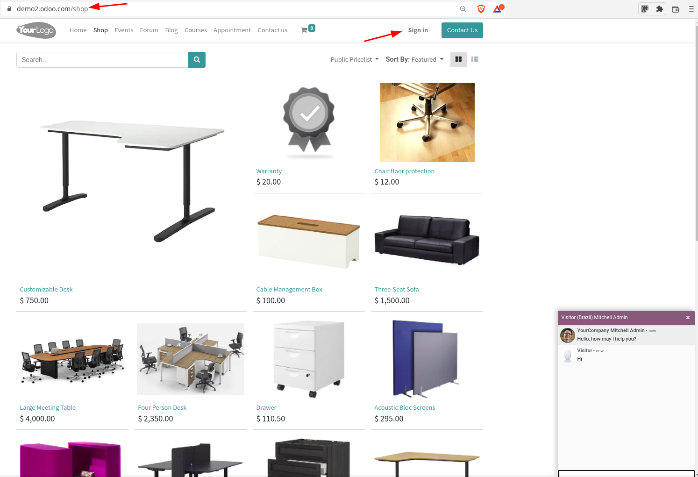
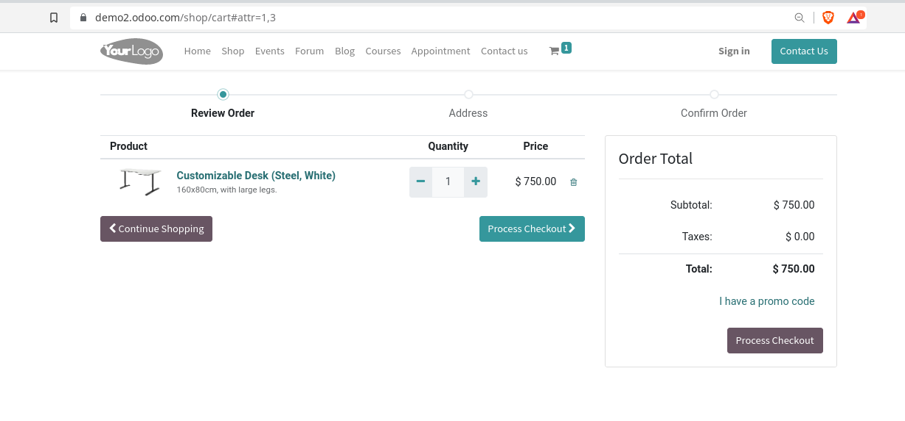
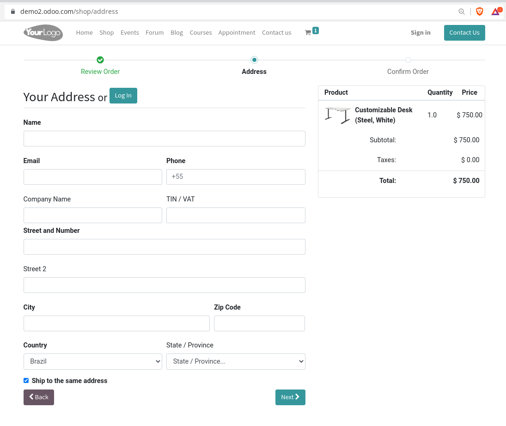

Interfaces de usuário¶
Odoo UX
Entendendo a interfaces de usuário¶
No módulo um fizemos um overview da arquitetura do Odoo, também falamos do que um pouco do que é possível fazer com o Odoo.
Agora vamos nos aprofundar um pouco mais nas diferentes interfaces de usuário.
Backend¶
Começando pela mais conhecida delas e que faz com que o sistema seja tão conhecido, a interface da retaguarda, ou comumente chamada de Backend.

Menu principal Odoo Enterprise¶
Esta é a área que somente os usuários internos, geralmente os funcionários da empresa tem acesso, é onde os processos de negócio ganham vida.
Tip
Por exemplo onde um Pedido de Venda, onde um e-commerce o gerente de vendas consegue ver todas os pedidos feitos automaticamente pelo site, aprovar pedidos feitos manualmente por um vendedor pode gerar novas cotações manualmente, administrar e simular preços e etc;
Esta interface tem características únicas e a primeira vista, parece ser pouco mutável, mas você vai se surpreender do que ela é capaz. Principalmente quanto instalamos módulos que à customizam.
Alem disso precisamos saber que a interface padrão do core do Odoo não é tão bonita e prática. O Odoo Enterprise tem um módulo chamado web_enterprise que melhora a interface de usuário.
Mas da mesma forma a OCA também mantem um módulo parecido que também melhora a interface, o web_responsive.
Interface padrão:¶
{kind=link}
{kind=link}
Interface com web_enterprise¶
{kind=link}
{kind=link}
Interface com web_responsive¶
O módulo disponível no projeto: https://github.com/oca/web
{kind=link}
Tip
Outros módulos que alteram a interface do backend podem ser encontrados na loja da Odoo SA: https://apps.odoo.com/apps/themes/category/Backend/browse
O Portal¶
O portal é uma área do sistema onde podemos compartilhar dados com usuários externos, através de uma senha de acesso.
Voltando ao exemplo anterior onde no backend um gerente visualiza todos os pedidos de vendas da empresa. O portal é o local onde o cliente consegue ver apenas os seus pedidos, como a área privada de um e-commerce, geralmente com permissão de somente visualizar os dados, saber o status do pedido e etc.
{kind=link}
Alguns documentos permitem interação com o usuário, por exemplo um pedido de compras solicitado pela empresa pode ser aprovador pelo Fornecedor através do portal de compras.
{kind=link}
O Frontend¶
O Frontend atua como uma interface que geralmente não requer autenticação, em um e-commerce representa a loja virtual, onde os itens são expostos, os usuários podem fechar seus carrinhos de compras, se cadastrar e e etc.
  {kind=link}
{kind=link}
{kind=link}
Essa é a interface que mais permite customização, pois não tem um layout definido e onde podemos de certa forma abusar do uso de HTML e Javascript, alem de interagir com as APIs “REST” do backend.
{kind=link}
{kind=link}
{kind=link}
{kind=link}